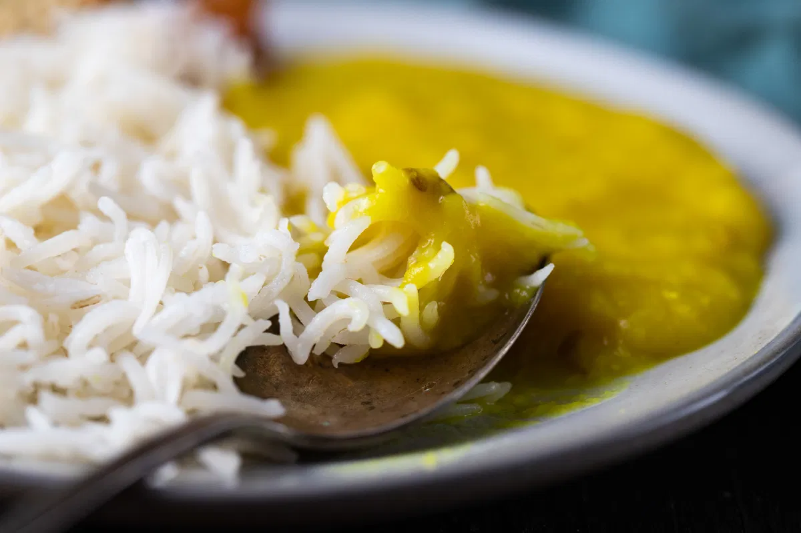

| Meal Type | Recipe Name | Dish Image | Instructions & Ingredients | Recipe Link |
|---|---|---|---|---|
| Breakfast | Pratha |
Ingredients: Whole wheat, water, salt, oil Instructions: Mix ingredients, roll out, and cook on a hot griddle until golden. |
View Recipe | |
| Lunch | Daal Chawal |
 |
Ingredients: Lentils, Rice, Spices, Onion, Tomato Instructions: Simmer lentils with spices and serve with steamed rice. |
View Recipe |
| Dinner | Bryanii |
=
Ingredients: Rice, Meat, Yogurt, Spices, Herbs Instructions: Marinate meat, cook with aromatic rice and spices for a rich biryani flavor. |
View Recipe | |
| Dessert | Chocolate Cake |
Ingredients: Flour, Cocoa Powder, Sugar, Eggs, Butter, Baking Soda Instructions: Mix ingredients; bake at 350°F for 30 minutes; let cool and serve. |
View Recipe |